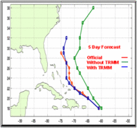

To great fanfare early last year, President Bush announced that he wanted NASA to focus on returning humans to the Moon and on putting humans on Mars. Of course, Bush never followed up those words with the money it would take to implement them. Now, NASA is predictably cannibalizing its science programs as it tries the impossible task of fulfilling the Moon-Mars objectives within its pre-existing budget.
According to a National Research Council (NRC) report released last week, among the possible victims is NASA's system of Earth-observing satellites. Since natural disasters and impending global climate change threaten the future livelihood of a large fraction of the world's population, this appears to be a very foolhardy decision.
The scientists on the NRC panel, an arm of the National Academies of Science, say in their report:
The current U.S. civilian Earth observing system centers on the environmental satellites operated by NOAA [National Oceanic and Atmospheric Administration]; the atmosphere-, biospheres-, ocean-, ice-, and land-observation satellites of NASA's Earth Observing System (EOS); and the Landsat satellites, which are operated by a cooperative arrangement involving NASA, NOAA, and the U.S. Geological Survey (USGS). Today, this system of environmental satellites is at risk of collapse. Although NOAA has plans to modernize and refresh its weather satellites, NASA has no plan to replace its EOS platforms after their nominal 6-year lifetimes end (beginning with the Terra satellite in 2005), and it has canceled, descoped, or delayed at least six planned missions, including the Landsat Data Continuity mission.
These decisions appear to be driven by a major shift in priorities at a time when NASA is moving to implement a new vision for space exploration. This change in priorities jeopardizes NASA's ability to fulfill its obligations in other important presidential initiatives, such as the Climate Change Research Initiative and the subsequent Climate Change Science Program. It also calls into question future U.S. leadership in the Global Earth Observing System of Systems, an international effort initiated by the current Administration. The nation's ability to pursue a visionary space exploration agenda depends critically on its success in applying knowledge of Earth to maintain economic growth and security at home.
The panel lists six important missions that have been adversely affected by NASA's budgetary decisions. Despite my strong interest in both science and environmental issues, I was not familiar with a single one of these missions. I suspect I am not alone. So I decided to look into more detail about what we may be missing out on unless NASA leaders get their act together.
One of the missions mentioned is called Global Precipitation Measurement (GPM). This is the only one of the six that has been merely delayed—having its launch date postponed until at least 2010, three years later than originally planned. In fact, last year, NASA listed 2012 for the planned launch date, so perhaps even the 2010 date may not be met.
GPM aims to provide "near-global measurement of precipitation, its distribution, and physical processes," in order to help scientists more fully understand the details of Earth's water cycle. The total cost is approximately one billion dollars, so it is a major project. Fittingly, the data it gathers will be extremely useful in many areas of direct benefit to society. Climate scientists will be able to improve their climate models and thus improve climate prediction, which will be crucial to planning for and trying to reduce the effects of global warming in coming years. Meteorologists will be able to use this data to improve their weather models and thus improve weather forecasts. And hydrologists will be able to use data about rainfall in large drainage basins to better understand flood hazards and to enable more precise planning of activities dependent upon fresh water, which is an awful lot of activities.
GPM is a follow-up mission to the Tropical Rainfall Measuring Mission (TRMM), both of which are joint projects of NASA and the Japanese Aerospace Exploration Agency. TRMM was launched in 1997 on a Japanese rocket, is several years past its designed lifespan, and is schedule to end operations later this year in order to use its remaining fuel to perform a controlled atmospheric re-entry.
TRMM, despite capabilities much lower than envisioned for GPM, has been
a dramatic success. According to the NRC panel, among other things, TRMM's measurements
have "led to improved operational forecasts of precipitation and
estimates of hurricane storm tracks, which in turn have almost
certainly reduced economic losses and saved lives." At right is a dramatic simulation, using Hurricane Bonnie in 1998, of how inclusion of TRMM data on rainfall improves hurricane forecasting.
As a GPM scientist states in the December 2004 GPM newsletter, "The usefulness of the TRMM mission in the realm of hurricane
research bodes well for the success of GPM. With enhanced measurement
capabilities, expanded data coverage, and improved data resolution,
GPM should greatly facilitate hurricane researchers in their
quest to understand this important phenomenon." And that is just one area of climate and weather research where GPM data is likely to prove highly beneficial to the public.
TRMM is a single satellite that, due to its orbit, only covers relatively low-latitude locations—between 35 degrees north and 35 degrees south—and even those only sporadically. GPM, on the other hand, is planned to
consist of a core spacecraft and eight "constellation" satellites in higher inclination orbits, so that a higher fraction of
the Earth's surface can be covered much more frequently—on average
every three hours.
The heart of the GPM mission is its core spacecraft and the two instruments it will contain: a microwave imager and a precipitation radar. The microwave imager on the GPM core spacecraft is similar to the one flown on TMRR, but will have a main reflector double the size of TMRR's, thus halving the size of the area of the Earth's surface that it measures and so resulting in significantly higher accuracy. The precipitation radar is also enhanced from the one flown on TMRR, which was the first of its kind operated in space. The GPM radar will make measurements at two frequencies instead of one. The differential reflectivity between these radars will allow scientists to infer drop size distributions and rain-rates. The comprehensive data on cloud structure and rainfall rates gathered
by the two instruments on the core spacecraft will be used to calibrate data gathered by the
constellation spacecraft, which will include spacecraft designed for other purposes but that have some kind of capacity to measure rainfall (such as weather satellites). Furthermore, data from the individual instruments on each of the spacecraft can be compared against each other over time to allow scientists to further improve the accuracy of the measurements.
The remaining crucial components of the GPM mission are a ground validation system, where numerous ground stations will be used to validate and calibrate data gathered by the satellites—a classic reality check—and a dedicated data processing system.
Given the large scientific and societal benefits, including improved hurricane forecasting, improved climate models, and much more, replacement and enhancement of TRMM with GPM should be a high priority. The NRC panel obviously feels so, using their first recommendation to urge that "the Global Precipitation Measurement mission be launched without further delays."
Unfortunately, NASA's leaders, due to Bush's unfunded Moon-Mars mandate, appear to have a different perspective on the importance of Earth sciences:
The
technological tools and scientific skills that NASA continues to
develop through studying Earth, which has the most complex ecosystem
with continuous interactions of biological, chemical and physical
processes at all time and space scales, are critical in the exploration
and search for life of other planets in our own solar system and beyond.
Studying Earth is critical for the search for life on other planets? No. It is critical for improving our lives here on Earth. As Rep. Sherwood Boehlert, Chairman of the House Science Committee put it last week:
[NASA's] testimony describes Earth science research as being
significant to the extent that it informs our knowledge of, and our
capability to explore other planets. This is precisely backwards. The
planet that has to matter most to us is the one we live on. You'd think
that would go without saying. And we are woefully ignorant of the way
this planet works—of the functioning of the land, oceans and
atmosphere and how they interact.
I plan to examine the other five Earth-observing missions cancelled or descoped by NASA in the coming days and weeks.
{kind=link}
{kind=link}
{kind=link}
Recent Comments